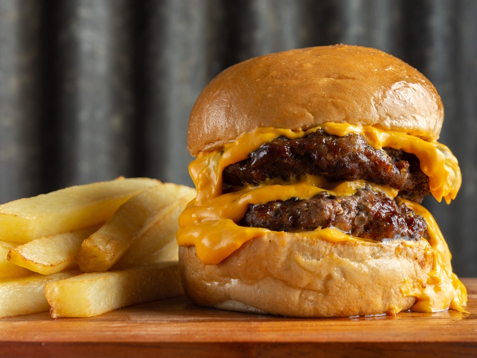

Ingredientes
2 medallones de carne
Pan de hamburguesa
Queso cheddar
Panceta crujiente
Pepinillos
Aderezo a elección (ketchup, mostaza, mayonesa)
Papas para freír
Freír las papas hasta dorar.
Cocinar los medallones en una plancha o sartén.
Agregar queso cuando estén casi listos.
Tostar el pan y armar la hamburguesa con todos los ingredientes.
Servir con las papas calientes.
Video: Cómo hacer una Hamburguesa Doble con Papas